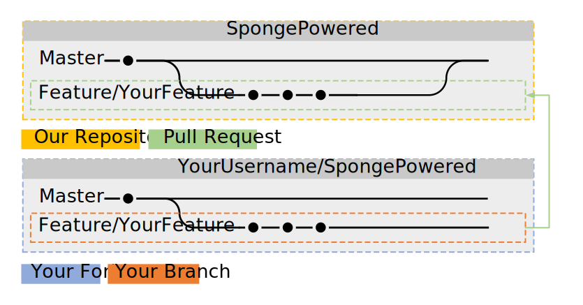

Como utilizar o Git(Hub)¶
Se você quer auxiliar na criação do Sponge, tem uma ótima adição a API, ou quer melhorar nossos Docs, precisará familializar-se com o git e GitHub. Se já está familializado com os processos de forking, branches, issues, pull requests e commits, então pule esse tópico. Se você não tem ideia do que estamos falando, então continue lendo.
Nota
Este guia assume que você leu Instalar o Git e que você já configurou sua máquina com um cliente Git à sua escolha.
O conceito básico do Git e GitHub¶
O Git permite que vários desenvolvedores possam desenvolver um software ao mesmo tempo. O GitHub é um site onde desenvolvedores podem colaborar e compartilhar seu trabalho com outros. O GitHub se baseia em Git para o gerenciamento do trabalho mencionado.
Dica
Se você não está familiarizado com o vocabulário do Git e do GitHub, dê uma olhada no glosário do GitHub.

Neste caso, o repositório está nomeado como SpongePowered, tem duas branches chamadas master e feature 1 e também alguns commits em ambas as branches.
Vamos colocar estes termos em contexto - começando com o repositório. O repositório (abreviação: repo) é um lugar onde um projeto armazena seus arquivos. Os repositórios da SpongePowered estão localizados no GitHub. No entanto, esse repo possui algumas restrições de acesso para proteger ele contra alterações indesejadas ou maliciosas. Você não pode simplesmente fazer mudanças, já que o repo é somente leitura para usuários regulares. Agora você pode estar se perguntando como você deve apresentar propostas e alterações. Bom, é aí que os forks entram na jogada. Você pode pegar uma cópia dos repos da SpongePowered e fazer as mudanças lá. Quando terminar, você pode abrir uma pull request (PR) no seu repositório. Suas adições e alterações propostas poderão assim ser revistas e a staff lhe dirá se algo está errado ou precisa de melhoria e eventualmente dar merge com a PR final.
Aqui há um um pequeno sumário do procedimento descrito acima, antes de irmos em detalhes:
Dê fork no projeto à sua escolha
Clone-o para a sua máquina local
Crie uma nova branch
Faça as alterações desejadas
Teste se tudo funciona
Faça commit das alterações
Sincronize-as com o GitHub
Proponha as alterações em uma PR para o repo da SpongePowered
Altere sua PR se necessário
Sua PR é enviada para a master pela staff
Detalhes por favor!¶
1. Forking a Repo¶
Nota
Este passo só é necessário se você nao tem permissao de push no repo que você está alterando. Se você está trabalhando no seu próprio repositório, não é necessário um fork. Apenas pule esta etapa e clone direto. Se você está alterando o Sponge e você não é da staff, esta etapa é necessária.
Agora que você sabe o conceito básico, iremos discutir os detalhes. Primeiro você precisa fazer fork no repositório que você quer alterar. Isso pode ser feito no GitHub.com, onde você irá encontrar o botão Fork no topo da página dos repositórios. Após pressioná-lo, o GitHub vai lhe apresentar um clone do repositório original. Você notará que o clone agora estará localizado em SuaContaDoGitHub/NomeDoRepoClonado. Pronto, primeiro passo completo.
Nota
Todas as branches do repositório original também serão copiadas, você receberá um clone exato do repositório original.

2. Cloning the Fork to Your local Machine¶
Agora você precisa ter esse fork na sua máquina local para fazer alterações. Abra o cliente do Git à sua escolha (Instalar o Git) e clone seu fork para a sua máquina local. O cliente irá te perguntar em qual pasta deverá salvar tudo. Segundo passo terminado, muito bem!
Nota
A maioria dos passos podem ser feitos através de uma interface gráfica à sua escolha. Se você já possui experiência com interface de linha de comando, você também pode usar. Cada passo irá mostrar os comandos necessários para atingir o resultado desejado.
Como alternativa, você pode cazer isso via CLI (command line interface, CMD ou powershell no Windows). Note que você precisa criar a pasta antes de digitar este comando:
git clone git://github.com/YourGitHubAccount/ClonedRepoName.git

3. Creating a New Branch¶
Agora que você tem um clone local do seu fork, está na hora de criar uma branch para trabalhar. As branches foram projetadas para se desenvolver e testar diferentes recursos e adições ao mesmo tempo, sem causar problemas e erros devido à interferência das adições. É fortemente aconselhável de que você não faça alterações no branch master. Em vez disso, crie uma nova branch (com um nome razoável) e faça as alterações lá.
Isso implica que primeiro precisamos criar uma branch, então vamos lá! Você pode fazer isso pelo seu cliente (onde deve ter um botão de criar branch em algum lugar), ou você pode usar o CLI com git:
git checkout -b [name_of_your_new_branch]
Isso irá criar uma branch como o nome à sua escolha e alterar para ela. Todas as mudanças que você fará serão nessa branch. Se você precisa mudar para outra branch (por exemplo master), apenas reutilize esse comando. Terceiro passo pronto! Bom trabalho até agora! Para ter uma visão geral das suas branches, apenas dê uma olhada no seu cliente git ou use:
git branch

Agora é hora de fazer suas alterações. Use o editor ou IDE à sua escolha para isso.
4. Test if Your Changes Work¶
Para a SpongeAPI e as implementações você precisa executar gradle compileJava. Siga para o próximo passo se finalizar sem erros. Se não, faça as correções necessárias e tente novamente.
Para a SpongeDocs você pode apenas enviar sua PR. Será feito uma build automaticamente e revelará possíveis erros. Outra opção é fazer um build do docs localmente. Dê uma olhada no readme.md em docs para mais instruções.
5. Commit the Changes¶
Quando você terminar, é preciso empacotar tudo em um único pacote (um commit) e colocar ele na branch. Novamente seu cliente git irá te ajudar. Dê um nome significativo ao seu commit e uma pequena descrição se necessário. Isso também pode ser feito via CLI:
Primeiro colete todos os arquivos e pastas que você quer colocar em um commit:
git add <file>
git add <folder>
Agora que os arquivos foram adicionados na lista de alterações que você quer inclusas no commit, apenas faça
git commit
Abrerá uma janela de texto onde você pode colocar uma mensagem se desejar. Dê uma olhada na imagem abaixo. Você notará que seus commits ainda estão apenas salvos localmente e não no seu fork no GitHub.
Nota
Você pode ter multiplos commits em uma PR. Apenas vá em frente e altere tudo oque precisar e comite as alterações. Você pode juntar tudo em um único commit depois.
Agora, o sexto passo está completo. Quase lá!

6. Sync to GitHub¶
Agora precisamos colocar as alterações do seu fork no GitHub. Tudo o que você fez até agora está salvo localmente. Como sempre, você pode usar seu cliente git para fazer isso (há um botão em algum lugar da sua interface gráfica), ou você pode fazer isso via CLI:
git push <remote> <branch>
Neste caso deve ser:
git push origin feature/YourFeature

7. Propose the Changes in a PR to the SpongePowered Repo¶
Você pode ou ir para sua página de forks no GitHub.com (deve haver um aviso no topo da sua página de forks para te guiar), ou você pode usar seu cliente do GitHub para criar uma pull-request. O cliente oficial do GitHub para Windows usa o canto superior direito da janela para isso.
8. Amend Your PR if Necessary¶
Se quisermos que você faça alterações na sua PR, então apenas faça mais commits no branch criado acima. Mais commits serão automaticamente adicionados a sua PR.
9. Your PR Gets Pulled¶
É isso. Estamos prontos! Ótimo trabalho!
Git avançado¶
Fundindo com rebase¶
Digamos que você tenha terminado suas adições ao repo, e vamos fingir que você fez 137 commits para conseguir terminar. Seu histórico de commit certamente irá parecer bagunçado. Seria uma pena se todos eles fossem registrados no repo, não? Muitos commits triviais também bagunçam o histórico do projeto. Felizmente, o Git tem uma boa ferramenta para contornar isso, se chama rebase. O rebasing transforma seus 137 commits em um só grande commit. Impressionante, não? Em vez de reinventar a roda, vamos te passar um link para um pequeno tutorial bem fácil de entender:
Gitready: fundindo com o *rebase*
Isto é o que ele faz, bem visualizado:

Criando um remoto¶
Naturalmente, o repo original é o pai direto do seu fork e seu fork é pai direro do seu clone local. No entanto, o repo original não é pai direro do seu clone. A princípio, isso não é um problema, mas impede de atualizar seu clone com as últimas atualizações do repo original. Se você configurar repo original como um remoto (lê-se: “pai”) do seu clone, você poderá pegar todas as alterações feitas nesse repo e aplicar no seu clone local. Veja abaixo como funciona pegar e atualizar.

Tudo bem. Este passo é feito através de CLI já que a maioria das GUIs (interfaces gráficas) estão faltando essa funcionalidade (bastante avançada):
git remote add upstream https://github.com/ORIGINAL_OWNER/ORIGINAL_REPOSITORY.git
Se você está inseguro sobee se isso funcionou como o esperado ou se você quer checar quais remotos estão definidos, você pode checar via:
git remote -v
a saída deve parecer assim:
origin https://github.com/YOUR_USERNAME/YOUR_FORK.git (fetch)
origin https://github.com/YOUR_USERNAME/YOUR_FORK.git (push)
upstream https://github.com/ORIGINAL_OWNER/ORIGINAL_REPOSITORY.git (fetch)
upstream https://github.com/ORIGINAL_OWNER/ORIGINAL_REPOSITORY.git (push)
Nota
Se você ver o aviso fatal: The current branch NomeDaSuaBranch has no upstream branch., então a branch pode não estar no upstream remoto. Isso pode acontecer se é a primeira vez que você envia um commit para a nova branch. Para enviar a branch atual e definir o remoto como upstream, use git push --set-upstream origin NomeDaSuaBranch.
Rebasing¶
Digamos que você tenha feito algumas mudanças na sua branch desejada, mas ao mesmo tempo alguem atualizou o repo. Isso significa que seu fork e seu clone estão desatualizados. Isso não é um grande problema, mas para evitar problemas quando mesclar adições mais tarde, é fortemente recomendável fazer rebase das suas alterações com as últimas mudanças do repo original. Se você ainda não definiu o repo remoto ainda, faça antes de tentar fazer rebase.
Uma rebase bem sucedida requer várias etapas:
1. Fetch the Changes on the Remote Repo¶
Primeiro você precisa buscar as alterações no repositório remoto. Isso é (novamente) feito via CLI:
git fetch upstream
Isso vai adicionar todas as alterações do upstream remoto e colocá-las em um branch upstream/master temporário.
2. Merge Remote Changes locally¶
Agora precisamos selecionar nosso branch master local:
git checkout master
Depois disso vamos fundir as alterações que estão inclusas em upstream/master em nosso branch master local:
git merge upstream/master
Tudo bem, isto é oque fizemos até agora:

3. Rebase Local Branch against Updated Master¶
Em seguida fazer rebase do branch local em que você está trabalhando com o master local. Precisamos alternar para a sua branch de trabalho (aqui: feature/seurecurso) e então executar o rebase. Isso é feito via:
git checkout feature/yourfeature
git rebase master
Isso vai rebobinar sua branch, adicionar os commits da master e então aplicar suas próprias alterações novamente. O resultado será parecido com este:

4. Push Everything to your Fork¶
A última coisa que precisamos fazer é enviar tudo ao “fork”. Se você já criou uma PR, vai ser atualizada automaticamente:
git checkout master
git push -f
git checkout feature/yourfeature
git push -f

Você conseguiu, incrível! Bom trabalho e bem feito, obrigado por voar na Rebase-Air!